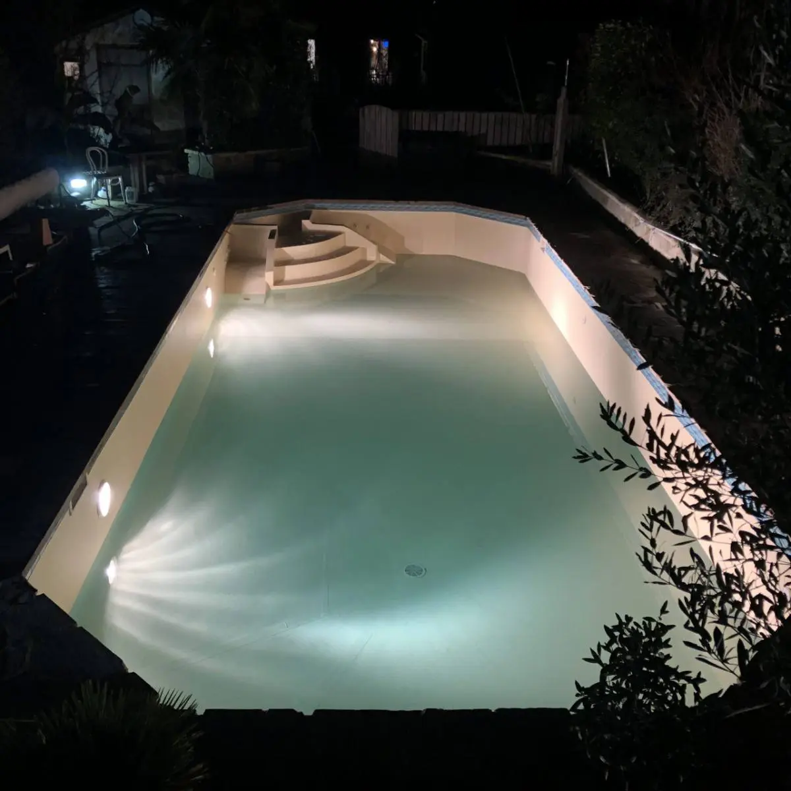
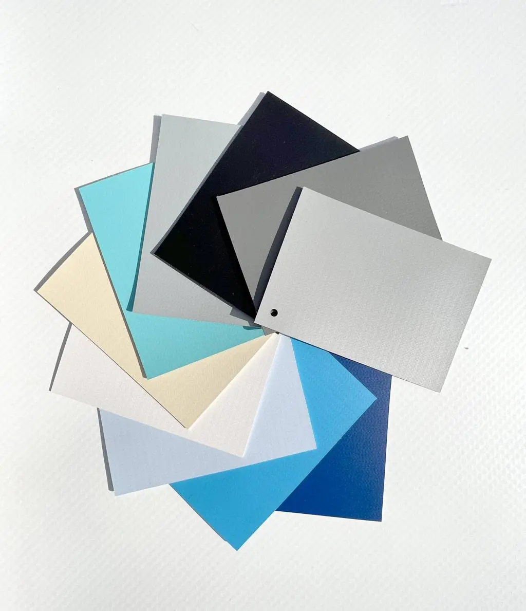
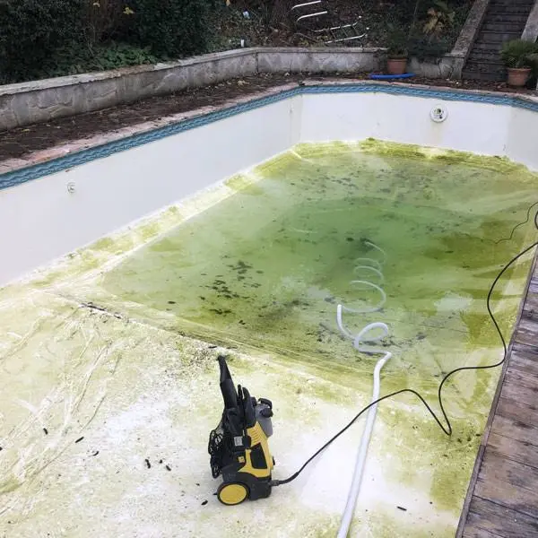
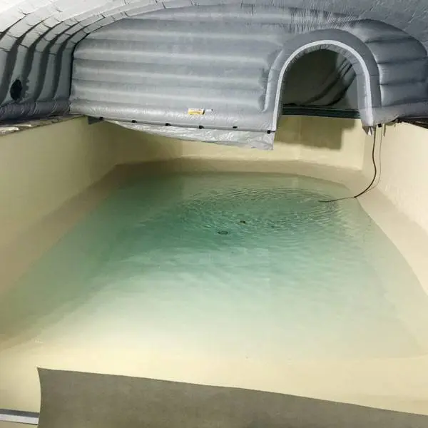
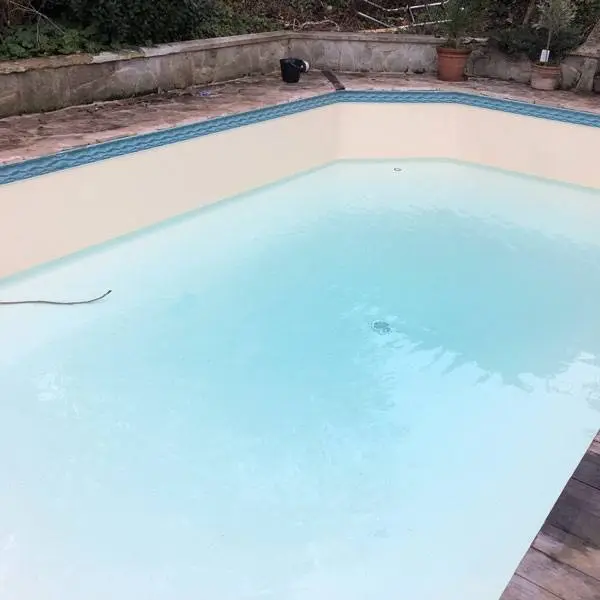
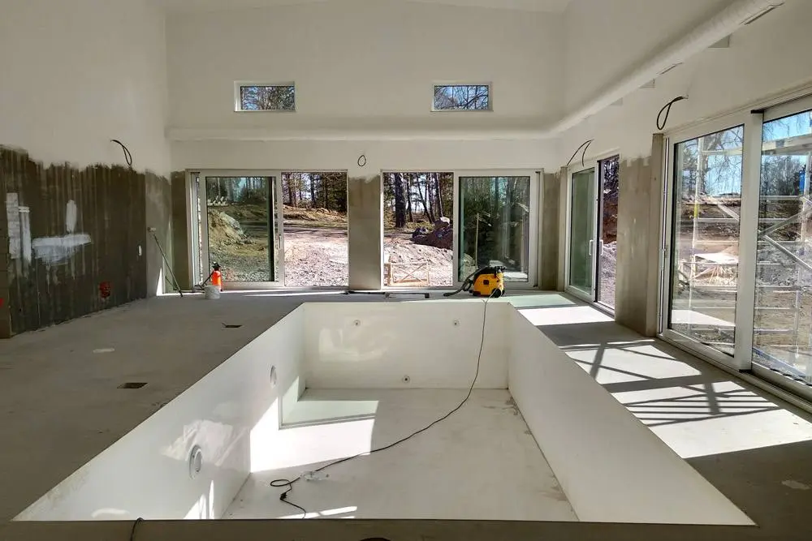
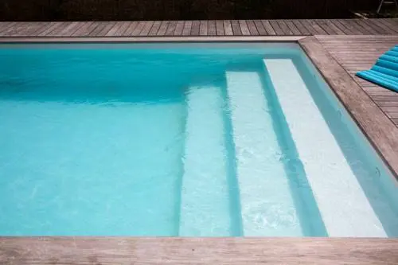
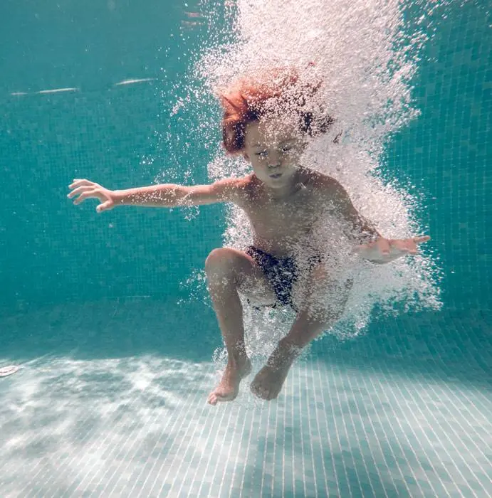
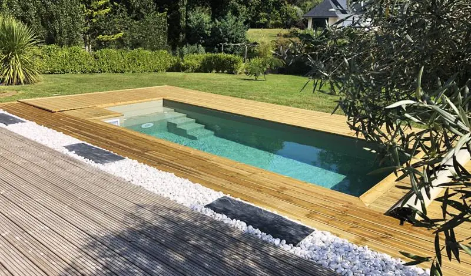

Un liner armé, soudé sur place, partout en Bretagne.
Rénovation, réparation ou bassin neuf : Océance Piscines pose une membrane PVC armée de 1,5 mm d’épaisseur, découpée à la mesure de votre piscine et garantie 10 ans.

Votre liner, choisi parmi plus de 30 coloris.
Pour les particuliers, nous posons une membrane haut de gamme, sélectionnée pour durer.
- 150/100eÉpaisseur haut de gamme, sans vernis
- DuréeTrès grande longévité
- TraitementAnti-microbien et anti-fongicide
- UVRésistant aux UV
- 30+Coloris et motifs (nous consulter pour le détail)
- BassinsGamme spéciale pour les étangs et bassins d’agrément

Du vieux liner au bassin terminé.
Une rénovation photographiée chez un client : quelques jours, et la piscine change de vie.



Votre liner a fait son temps ? Décrivez-nous votre bassin, le devis est gratuit.
Demander un devis gratuit06 77 94 21 60En rénovation
Votre liner est décoloré, devient cassant, ou des plis apparaissent au fond ? Il est sans doute temps de le remplacer.
- Piscine en béton
- Piscine à ossature bois ou métallique
- Étang, mare
Nos tarifs de rénovation se font sur devis : décrivez-nous votre bassin, nous revenons vers vous.
Demander un devisEn auto-construction
Vous avez fait vous-même le terrassement et la maçonnerie ? Nous prenons la suite sur les parties techniques, qui demandent un savoir-faire et un outillage particuliers.
Pas encore commencé ? Nous vous conseillons sur l’emplacement du bassin et les étapes de sa construction. Avec nos partenaires, nous pouvons aussi chiffrer la réalisation du bassin.
Voir la construction pas à pasPourquoi une membrane armée tient plus longtemps.
Résistant
Deux fois plus épaisse qu’un liner classique, la membrane armée 100/150e enferme une trame entre deux couches de PVC.
Réparable
Un liner standard est assemblé en usine. La membrane armée est soudée sur place et se répare facilement : elle dure.
Polyvalent
Étang ou piscine : nous travaillons avec des marques choisies pour leur rapport qualité-prix, dont Delifol et Alkorplan, pour un grand choix de couleurs et de textures.
Pourquoi choisir Océance Piscines ?
Nous posons du liner en neuf comme en rénovation, et travaillons régulièrement avec des clients professionnels.
Un bassin prêt pour l’été
Avec notre dôme gonflable et notre chauffage, nous travaillons quelle que soit la saison.
Garantie décennale
À la fin du chantier, vous recevez un certificat de garantie valable 10 ans.
Conseil et savoir-faire
Envie de réduire la facture ? Nous vous disons quelles étapes faire vous-même (retirer l’ancien liner, par exemple) et quelles options choisir selon l’état de votre bassin.
Un nouveau liner, en quatre temps.
En neuf comme en rénovation, tout commence par un simple contact.
Prenez contact avec nous
Premier contactNous cherchons ensemble la meilleure solution. Vous recevez une proposition sur mesure.
Acceptez le devis
2 à 3 jours de poseNous fixons une date d’intervention. La pose d’un liner armé prend en général 2 ou 3 jours.
Après la pose
Mise en eauNous remplissons votre bassin. Vous recevez le certificat de garantie et nos conseils.
Le bridage final
1 à 2 jours plus tardQuand l’eau est assez haute et la membrane bien en place, nous revenons brider définitivement les éléments.
Piscinistes : un poseur de membrane armée quand vous en avez besoin.
Besoin de renfort ponctuel ? Nous intervenons en sous-traitance pour la pose de membrane armée en Bretagne, sur tout type d’ouvrage.
- Sous-traitance de pose de membrane armée
- Maintenance et entretien
- Rénovation
Nous intervenons dans toute la Bretagne, depuis Fouesnant :
Nos services clé en main

Suivi de projet
Avec nos partenaires terrassier et maçon, nous prenons en charge toute la construction, sous garantie décennale. Nos partenaires d’aménagement extérieur (espaces verts, terrasse) peuvent embellir le bassin.
En savoir plus
Matériel et équipement
Épuisette, robot, pompe à chaleur, produits d’entretien… nous fournissons tout ce qu’il faut pour entretenir votre bassin.
En savoir plusConstruction de piscine en Bretagne
Pour vous offrir le meilleur rapport qualité-prix, nous nous concentrons sur les piscines en béton, enterrées ou semi-enterrées. Profitez de notre expérience pour faire les bons choix.
Les étapes de création de votre piscine
Une piscine apporte de la valeur à votre maison et des soirées d’été au bord de l’eau. Voici le chemin, pas à pas.
L’étude personnalisée
Devis gratuitVous avez sans doute une idée de l’emplacement et des dimensions. Nous venons sur place faire le relevé nécessaire au permis de construire, puis nous vous proposons plusieurs options selon vos envies, dans le respect des normes.
Le terrassement
Après accord du permisUne fois le permis ou la déclaration de travaux acceptés, nous creusons le futur bassin. Une étape clé : la piscine doit durer des années, voire des décennies.
La maçonnerie
Béton arméAprès les fondations en béton armé, notre partenaire maçon monte les murs en blocs à bancher, renforcés par un chaînage horizontal et vertical pour bien résister à la pression de l’eau.
La pose du liner
100/150e · ≈ 1,5 mm · 10 ansLe PVC armé est préparé sur mesure puis soudé sur place, pour une étanchéité parfaite, garantie 10 ans. Quelques jours suffisent. Grand choix de coloris, résistance aux UV, réparation facile.
Filtration et pompe à chaleur
Avec nos partenairesNos partenaires installent la filtration, le chauffage, le pompage et l’éclairage. À la réception, nous vous donnons tous nos conseils d’entretien et de traitement.
Votre artisan pisciniste, dans le Finistère Sud.
Océance Piscines est une entreprise artisanale qui crée et rénove des piscines pour les particuliers : pose de liner armé, gestion de projet pour la construction de bassin, fourniture de matériel et de spas d’extérieur.
Nous intervenons dans toute la Bretagne et coordonnons les corps de métier nécessaires à votre projet. Tous les artisans du chantier sont couverts par une garantie décennale. Votre avantage : réaliser vous-même une partie des travaux, en vous appuyant sur un réseau d’artisans de confiance.

Nos dernières réalisations

Demandez une estimation.
Devis gratuit et sans engagement, pour les particuliers comme pour les professionnels : quelques questions, vos coordonnées, et nous vous rappelons.
Matériel de piscine
Une large gamme de produits de qualité professionnelle. Pour connaître les modèles disponibles, il suffit de nous demander.
Quatre familles, un seul interlocuteur.
Spa
Spas d’extérieur de fabrication européenne.
Garantie 5 ansChauffage
Pompes à chaleur et pièces de rechange, chauffage solaire, échangeur, réchauffeur, déshumidification.
PACAccessoires
Pompes de filtration, volets de protection, accessoires d’hivernage, épuisettes, robots…
Filtration · hivernageEntretien
Traitement automatisé, produits de traitement et d’analyse de l’eau.
Eau claireUn modèle en tête ?
Dites-nous ce que vous cherchez : nous vous indiquons les modèles disponibles et leur prix.
Mesurez votre bassin, nous préparons le devis.
Indiquez les dimensions de votre piscine : vous voyez tout de suite la surface de membrane à prévoir. Ces mesures partent ensuite avec votre demande de devis.
— de membrane à prévoir, pour — de fond, — de périmètre à souder et — d’eau environ.
Estimation indicative pour un bassin rectangulaire, hors escalier et recouvrements. Les mesures exactes sont relevées sur place, et le devis reste gratuit.
Parlons de votre bassin.
Une question, un projet ? Remplissez le formulaire pour recevoir une estimation, ou appelez-nous directement.
- Téléphone · Yannick Penven06 77 94 21 60
- E-mailoceance.piscines@outlook.fr
- HorairesDu lundi au vendredi, de 9 h à 18 h
- Adresse47 VC Hent Nod Gwen, 29170 Fouesnant
- Instagram@oceance_piscines
Mentions légales
Éditeur
Océance Piscines — 47 VC Hent Nod Gwen, 29170 Fouesnant — Tél. 06 77 94 21 60 — SIRET 904 444 544 00012
Responsable de la publication : M. Yannick Penven
Agence web
Armada communication — Tél. 02 98 53 06 33 — armadacommunication.fr
Hébergement
MonArobase, SARL au capital de 1 500 euros — SIRET 500 518 543 00011 — 3 avenue René Laënnec, 72000 Le Mans — Tél. 09 72 21 22 90
Droits d’auteur
L’ensemble de ce site relève de la législation française et internationale sur le droit d’auteur et la propriété intellectuelle. Tous droits de reproduction sont réservés, y compris pour les photographies. Toute reproduction sur un support électronique est interdite sauf autorisation expresse du directeur de la publication.
Informatique et libertés
Le droit d’accès, de modification, de rectification et de suppression des données qui vous concernent (article 34 de la loi 78-17 du 6 janvier 1978) s’exerce auprès du responsable de la publication.
Politique de confidentialité
Océance Piscines s’engage à respecter ses obligations au titre du Règlement général sur la protection des données (RGPD).
Cookies
Nous utilisons un outil de statistiques respectueux de la vie privée : les données sont anonymisées et servent uniquement à compter les visites. Vous pouvez vous opposer à ce suivi à tout moment ; si vous effacez vos cookies ou changez de navigateur, il faudra renouveler ce choix.